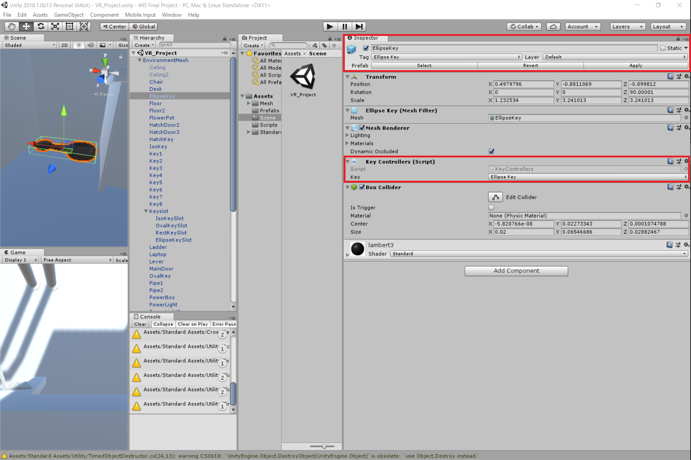

This was our 3D modelled rooms that was used in the VR program.

Our VR program relied on a "key" system that when two object collided, it will check if the two datatypes of the objects matched.
This was one of our first volunteer to try out our program to play-test it.